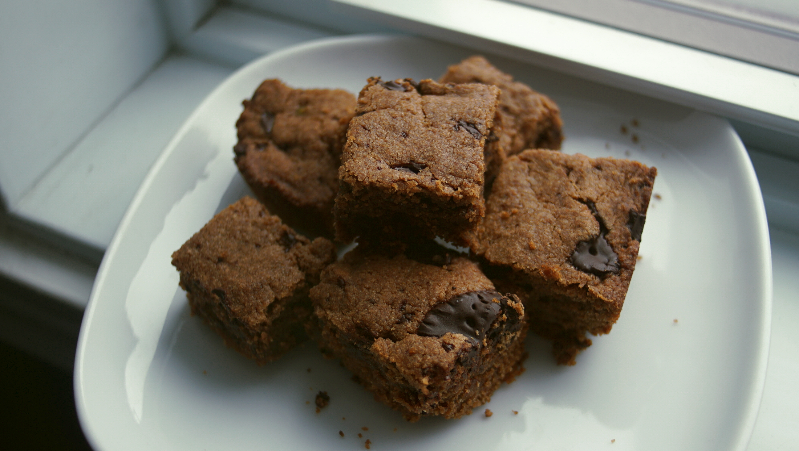

Choco peanut blondies
24 squares — 45 minutes
A recipe that's ideal when you've got chickpea left-overs, which happens to me a lot when cooking from dry beans. Sometimes I'll prepare chickpeas for this recipe, and use the rest as part of a meal for lunch or dinner, something like a chickpea salad sandwich or spicy stir-fried chickpeas. What's even better, is that the cooking liquid from the chickpeas is re-used in the same recipe as a binding and leavening agent. When whipped at high speeds, chickpea cooking liquid (or aquafaba) triples in size and acts as an egg replacer.
I don't recommend re-using the liquid from cans of chickpeas, as it's technically the soaking liquid which ought to be discarded. Substituting canned chickpeas from home-cooked beans is fine, but if you do this, discard the liquid and use either a flax egg or ground and soaked chia seeds. These two ingredients can help bind ingredients, but aren't effective when it comes to leavening.
It's possible to omit the cocoa powder, or to use double the quantity of peanut butter to 240 g (1 cup)instead of adding chickpeas. If you decide not to use chickpeas, be sure to add an egg replacer (chia or flax egg, as suggested above).
 brown sugar 180 g
brown sugar 180 g vegan butter 113 g
vegan butter 113 g peanut butter 120 g
peanut butter 120 g chickpeas 120 g, cooked
chickpeas 120 g, cooked cocoa powder 25 g
cocoa powder 25 g all purpose flour 180 g
all purpose flour 180 g baking powder 5 g
baking powder 5 g dark chocolate 190 g
dark chocolate 190 g
blondies
- Cook 170 g (1 cup) of dried chickpeas (see instructions). When thoroughly cooked, turn heat off and let cool. Strain beans from cooking liquid through a sieve, collecting the liquid in a bowl underneath. Reserve liquid.
- Arrange rack at middle of oven. Preheat oven at 180 °C (350 °F). Grease 8x8 baking dish with vegetable oil or vegan butter.
- In a big bowl, beat 180 g (1 cup) of brown sugar with 113 g (1/2 cup) of softened vegan butter. Using an electric mixer at medium speed, beat in 120 g (1/2 cup) of peanut butter, 120 g (~3/4 cup) of cooked chickpeas and 90 ml (6 tbsp) of the cooking liquid from the chickpeas (aquafaba) until light and fluffy and well blended.
- Stir in 25 g (~1/4 cup) of cocoa powder, 180 g (1 1/2 cups) of all purpose flour and 5 g (1 tsp) of baking powder. Stir in 190 g (6.5 oz) of roughly chopped bits of unsweetened dark chocolate. Spread in baking dish.
- Bake for 30-35 minutes. Let cool before cutting. Slice into 24 squares.